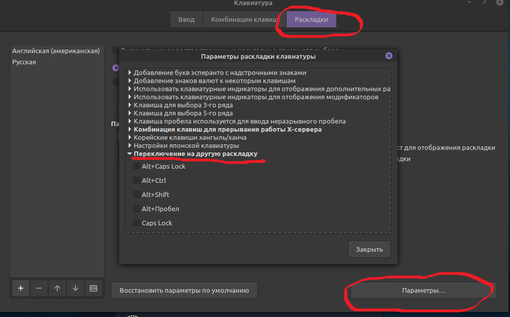
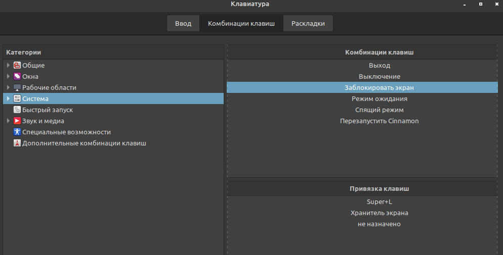

Менеджер пакетов :
Установка нужных программ :
Flatpak - поддерживается Linux Mint
Snap - не любит !!!
sudo apt install vlc mpv curl deluge filezilla flameshot akregator htop mc -y
sudo apt install git cmake llvm build-essential clang postgresql mysql-server python3-pip maven openjdk-21-jdk podman -y
curl -fsSL https://ollama.com/install.sh | sh
sudo apt install fontconfig libfontconfig-dev ibxcb-shape0-dev libxcb-xfixes0-dev libxcb1-dev libxkbcommon-dev libasound2-dev -y
curl -fsSL https://deb.nodesource.com/setup_14.x | sudo -E bash -
sudo apt install nodejs -y
sudo -H pip install --upgrade yt-dlp
sudo apt install youtube-dl -y
Установка Jupyter Notebook :
sudo apt install python3 python3-dev python3-venv python3-pip -y
sudo apt-get install python3-numpy python3-scipy python3-matplotlib -y
python3 -m venv myenv
source myenv/bin/activate
pip install --upgrade pip
pip install jupyter
pip install matplotlib
jupyter notebook
Jupyter Notebook
Настройка отображения времени :
| %A %d %B %Y %H:%M |
Настройка раскладки клавиатуры :

Сменить HotKey для блокировки эркана (для IDEA) :

Установка Azul Zulu на Debian-based Linux :
sudo apt install gnupg ca-certificates curl
curl -s https://repos.azul.com/azul-repo.key | sudo gpg --dearmor -o /usr/share/keyrings/azul.gpg
echo "deb [signed-by=/usr/share/keyrings/azul.gpg] https://repos.azul.com/zulu/deb stable main" | sudo tee /etc/apt/sources.list.d/zulu.list
sudo apt update
sudo apt install zulu21-jdk
sudo apt install zulu17-jdk
java -version
Установка программ для работы :
sudo apt install remmina -y
sudo apt-add-repository ppa:remmina-ppa-team/remmina-next
sudo apt-get update
sudo apt-get install remmina remmina-plugin-rdp libfreerdp-plugins-standard
sudo apt-get install openconnect -y
Запуск бинарных файлов программ в linux Mint двойным щелчком мыши, без терминала:
Пример для SQLiteStudio
создаём файл sqlitestudio.desktop
#!/usr/bin/env xdg-open
[Desktop Entry]
Encoding=UTF-8
Version=1.0
Type=Application
NoDisplay=false
Exec=/home/alex/Загрузки/SQLiteStudio/sqlitestudio
Name=SQLiteStudio
Icon=application-sql
Comment=Программа для работы с SQLite файлами.
можно его потом скопировать в раздел /home/alex/.local/share/applications
cp /home/alex/Загрузки/SQLiteStudio/sqlitestudio.desktop /home/alex/.local/share/applications
Установка dep пакетов через консоль :
sudo apt install ./.deb
sudo dpkg -i имя_пакета.deb
Установка Podman (альтернатива Docker) :
sudo apt install podman
podman -v
podman run quay.io/podman/hello
podman run hello-world (Docker version)
Установка Docker :
sudo apt update
sudo apt install apt-transport-https ca-certificates curl software-properties-common
curl -fsSL https://download.docker.com/linux/ubuntu/gpg | sudo apt-key add -
sudo add-apt-repository "deb [arch=amd64] https://download.docker.com/linux/ubuntu focal stable"
sudo apt update
apt-cache policy docker-ce
sudo apt install docker-ce
sudo docker run hello-world
Настройка Docker чтобы работали plugin в IDEA и VSCode :
sudo groupadd docker
sudo usermod -aG docker $USER
newgrp docker
docker run hello-world
gpasswd -a $USER docker
sudo chmod 0777 /var/run/docker.sock
Установка Docker Compose:
https://github.com/docker/compose/releases
sudo curl -L "https://github.com/docker/compose/releases/download/v2.18.1/docker-compose-$(uname -s)-$(uname -m)" -o /usr/local/bin/docker-compose
sudo curl -L "https://github.com/docker/compose/releases/download/1.26.0/docker-compose-$(uname -s)-$(uname -m)" -o /usr/local/bin/docker-compose
sudo chmod +x /usr/local/bin/docker-compose
docker-compose --version
sudo docker-compose -f my-docker-compose.yml build
sudo docker-compose -f my-docker-compose.yml up -d
sudo docker-compose -f my-docker-compose.yml ps
sudo docker-compose -f my-docker-compose.yml down
Проблемы :
Глючит звук
sudo alsa force-reload